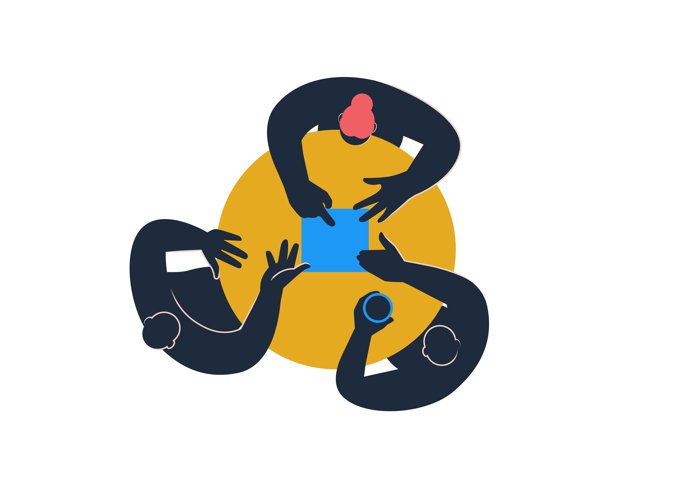

{{ p.title }}
{{ p.body }}

Saman er vår felles måte å jobbe sammen på – der vi bygger tillit, deler ansvar og drar i samme retning som ett lag.
{{ dailyTerm.definition }}
{{ dailyTerm.source }}Start med organisasjonen og begrepene. Da blir resten av rammeverket lettere å lese.
Veiviseren tar deg gjennom noen spørsmål og foreslår arbeidsform, mandatkrav og roller.
{{ homeOkrText }}
Skriv minst to tegn for å søke.
Ingen treff. Prøv et annet ord eller fjern filteret.
Alle team og grupperinger i Digdir, hva de leverer og hvorfor de finnes. Team registrerer og vedlikeholder informasjonen selv.
Teamet er lagt til i oversikten. Fyll ut mandat og medlemmer på teamsiden.
{{ teamCountLabel }}
Ingen team passer søket. Prøv et annet ord eller fjern filteret.
{{ okrError }}
{{ memberDialogSub }}
Ingen treff i ansattlisten.
Registrer det som skal til for å komme i gang. Mandat, teamkontrakt og medlemmer fylles ut på teamsiden etterpå.
{{ team.purpose }}
Mandatet er ikke komplett. Teamet fyller ut resten selv.
{{ b.text }}
{{ mandateStatus }}
Mandatet sier hva teamet skal løse. Teamkontrakten sier hvordan vi jobber sammen for å lykkes med det.
Teamkontrakten er ikke komplett. Teamet fyller ut resten selv.
{{ contractStatus }}
Ingen medlemmer registrert ennå.
Teamet leverer internt i Digdir, og har ingen av brukergruppene i styringsfundamentet som direkte mottaker.
Ingen verktøy registrert ennå.
Objectives and Key Results: målene teamet jobber mot, og nøkkelresultatene som viser om vi når dem.
Ingen OKR registrert ennå.
Rollene er beskrevet etter RAMO: rolle, ansvar, myndighet og oppgaver. Når rammene er klare, blir det lettere å samarbeide og enklere å ta gode beslutninger.
{{ roleFilterNote }}
{{ r.scope }}
{{ x.value }}
Spørsmål som hjelper deg å finne riktig arbeidsform, og riktig teamtype hvis det er et team du trenger. Valget avgjør hvilke prinsipper, roller og verktøy som anbefales videre.
{{ wizardQuestion.intro }}
{{ wizardResult.body }}
Anbefalte metoder, maler og verktøy. Noe må du forholde deg til, men i det store handler det om å velge verktøyet som passer formålet.
Ingen verktøy passer filtrene. Prøv en annen kombinasjon.
Målet er ikke at alle skal bruke identisk språk, men at vi har et felles referansepunkt for hva vi legger i de viktigste begrepene.
Ingen begreper passer søket.
Grunnleggende prinsipper vi etterstreber å leve etter i hverdagen - når vi leder og når vi jobber sammen for å levere.
{{ p.body }}
Digdirs visjon, samfunnsoppdrag, målbilde, verdier, brukergrupper og institusjonelle roller, samlet på én side.
MVP under testing i lederlaget fram til november. Fundamentet blir evaluert og justert av fasiliteringsgruppen i desember.
Saman for ein enklare digital kvardag
Vi bidrar til ein effektiv, brukerretta og samordna digitalisering av offentleg sektor
Virksomhetsplanen, inkl. budsjettfordeling beskriver overordnede mål og rammer for virksomheten, hovedprioriteringer og føringer, intern budsjettfordeling, samt drifts- og utviklingsoppgaver. OKR på avdelingsnivå inkluderes i virksomhetsplan.
Virksomhetsplan 2026 (PDF){{ v.text }}
Vi jobbar brukerretta, tek utgangspunkt i behova til brukargruppene våre og tek hensyn til ulike perspektiv.
Styringsfundamentet er inspirert av kompasset til Mattilsynet og strategy house-modellen, og samler Digdirs strategiske og kulturmessige ambisjonar på éin stad.
Alle ansatte i Digdir, med enhet i linjen og teamene de er med i.
Ingen treff.
Styringsflyt og tilbakemeldingssløyfe for strategisk, taktisk og operativt nivå
Vurderer strategigrunnlag, innsikt og føringer. Prioriterer samlet innsats og balansen mellom utforsking, nyutvikling og drift/forvaltning. Fastsetter overordnet kapasitet og finansiering. Oppretter, følger opp og avslutter innsatsområder og programmer.
Fordeler kapasitet og avklarer finansiering innenfor gitte rammer. Utarbeider mandater og koordinerer leveranser. Linjen stiller ressurser og følger opp interne team. Innsatsområder og programmer samordner arbeid på tvers.
Prioriterer oppgaver og gjennomfører innenfor mandatene. Leverer utforsking, nyutvikling og drift/forvaltning. Samler brukerinnsikt og følger opp resultater, læring, kvalitet og gevinster.
Innsats fra team og initiativer som utforsker nye teknologier, muligheter eller måter å løse oppgaver på gjennom eksperimentering og utprøving. Utfallet er usikkert, og den primære gevinsten er kunnskap og læring som kan gi grunnlag for framtidige prioriteringer, utvikling eller endret praksis.
Tiltak som skal avklare og møte behov gjennom nye tjenester, produkter, virkemidler eller organisatoriske kapabiliteter, eller vesentlige endringer i eksisterende løsninger og praksis. Tiltaket ivaretar hele utviklingsløpet fra behovsvurdering og vurdering av alternativer til utvikling, innføring og implementering.
Omfatter løpende innsats som opprettholder, forvalter og kontinuerlig forbedrer etablerte tjenester, produkter, virkemidler og virksomhetsfunksjoner gjennom livsløpet. Formålet er å sikre varig nytte, forsvarlig kvalitet, etterlevelse og effektiv ressursbruk.
Bestemme hvilke fagmiljøer og ressurser Digdir trenger, og hvordan vi skal utvikle og forvalte dem.
Mandatet er avtalen mellom teamet og den som har gitt oppdraget. Det sier hvorfor teamet finnes, hva det har ansvar for og hvilket handlingsrom det har.
Mandatet er ikke komplett. Teamet fyller ut resten selv.
Mandatet er lagret. Endringen er synlig for alle i Digdir.
{{ b.text }}
Mandatet sier hva teamet skal løse. Teamkontrakten sier hvordan vi jobber sammen for å lykkes med det.
Teamkontrakten er ikke komplett. Teamet fyller ut resten selv.
Teamkontrakten er lagret. Endringen er synlig for alle i Digdir.
{{ tool.desc }}
{{ tool.long }}
Ingen ressurser er lenket opp ennå.
Lenkene må settes inn.
Ingen team har registrert dette verktøyet ennå.
Innsatsområder skal løse en styringsutfordring. Vi samarbeider godt på tvers på flere områder allerede, men vi har ikke hatt noen mekanisme for å samkjøre mål, virkemidler og prioriteringer når flere team og fagmiljøer må dra i samme retning. Et innsatsområde samler disse om felles mål og effekter, og én områdeansvarlig setter retningen for utviklingsarbeidet innenfor innsatsområdet. Med utviklingsarbeid mener vi alt arbeid som skaper noe nytt eller bedre, enten det er digitale løsninger, regelverk, veiledning, råd, kunnskap eller prosesser.
Et innsatsområde opprettes når disse kravene er oppfylt:
Digdir kan ha inntil fire innsatsområder samtidig, og gjerne færre. Innsatsområder handler om å spisse Digdirs fokus og samle krefter der det gir mest effekt. Mange oppgaver i Digdir vil ligge utenfor innsatsområdene, og der samarbeider vi som før.
Hvert innsatsområde har effektmål/OKR som porteføljestyret følger opp jevnlig. Hvert år vurderes det om innsatsområdet skal fortsette, endres eller avsluttes. Det avsluttes når effekten er nådd, eller når samordningen ikke lenger gir merverdi, og da tar linjen over ansvaret.
Hvert innsatsområde ledes av en områdeansvarlig. Den områdeansvarlige har ansvar for at summen av det Digdir gjør innen området, gir ønsket effekt. Rollen har egne budsjettmidler og får kapasitet fra relevante team og fagmiljøer etter avtale med teameiere/linjeledere.
Områdeansvarlige får støtte fra porteføljekontoret, deltar i porteføljestyret og har direkte tilgang til direktøren. Så lenge de har rollen, hører de personalmessig til avdeling Strategi og styring i VSU. Det gir dem en tverrgående rolle uten bindinger til én fagdivisjon. De kan likevel fortsatt delta i faglige arenaer i divisjonen de kommer fra.
Områdeansvarlig bestemmer hva som er viktigst, og hvorfor innenfor innsatsområdets mandat. Linjen sikrer faglig kvalitet og riktig kompetanse, samt sørger for at det er satt av nok kapasitet til forsvarlig drift og forvaltningsoppgaver når restkapasiteten disponeres til innsatsområdet. Teamene bestemmer hvordan oppgavene skal løses, og eier leveransene.
Mange ønsker å komme raskt i gang og lære av erfaring fremfor å bruke tid på en omstendelig prosess. Vi foreslår derfor to steg:
Direktøren oppretter ett til to innsatsområder basert på innsikten og erfaringene vi har i dag. Må-kravene gjelder også her. Erfaringene brukes i steg 2.
En liten arbeidsgruppe leder en kort men bredere innspillsprosess. Arbeidsgruppen lager et beslutningsgrunnlag. Direktøren beslutter hvilke innsatsområder som opprettes, utnevner områdeansvarlige og utpeker team og fagmiljøer som skal bidra inn.
Samspillet mellom områdeansvarlige, teameiere og linjeledere er avgjørende, fordi linjen leverer kapasiteten og fagkompetansen. Vi har laget et forslag til rollebeskrivelser (se Roller under Organisering).
Samarbeid alene sørger ikke for at flere team prioriterer i samme retning. Innsatsområder gir én samlet retning og prioritering der det er nødvendig for å nå et viktig mål.
Innsatsområder skal ikke hindre forsvarlig drift. Det gir lite effekt å samkjøre virkemidler hvis ikke de fungerer i hverdagen. Det betyr at driften går stort sett som før men at utviklingsarbeidet kan bli prioritert annerledes.
Nei. Du og evt. andre teammedlemmer beholder sin(e) personaler(e) som før.
Områdeansvarlige setter retning for utviklingsarbeidet og samkjøring mellom team. Teamene bestemmer fortsatt hvordan oppgaver løses, med høy grad av autonomi innenfor teamets mandat.
Nei. Mange oppgaver i Digdir vil ligge utenfor innsatsområdene og det betyr ikke at de er mindre viktige. Innsatsområder er ikke det mest eller eneste viktig vi gjør, det er der hvor det er viktigst at vi er samkjørte.
Nei. Innsatsområder kan omfatte alle typer team.
Ja. Fagmiljøer og enkeltpersoner kan bidra med kompetanse inn i et innsatsområde. Det avtales med linjelederen din, og du hører til i linjen som før.

Frode Danielsen har jobba med nasjonale fellesløysingar i 15 år, der han mellom anna har hatt ei sentral rolle i å bygge opp eit sterkt og leveransedyktig forvaltningsmiljø for løysingane. Danielsen er jurist frå Universitetet i Bergen.
«Å flytte bokser og streker på et kart alene bringer oss ikke i mål. Det er det alle vi som må gjøre, gjennom måten vi samarbeider på hver dag.»
Arbeidsgiverforslaget til ny organisering, og hva som skjer fram mot at organiseringen trer i kraft 1. januar.
Se opptaket i TeamsLenken til opptaket må settes inn.
Mandatet er avtalen mellom enheten og den som har gitt oppdraget. Det sier hvorfor enheten finnes, hva den skal oppnå og hvilket handlingsrom den har.
Dette er et førsteutkast til mandat som skal jobbes videre med, du er velkommen til å gi innspill
Mandatet er ikke komplett. Enheten fyller ut resten selv.
Mandatet er lagret. Endringen er synlig for alle i Digdir.
{{ unitMandateNote }}
Ikke registrert ennå.
{{ b.text }}
{{ unit.desc }}
Enheten bistår og rådgir hele Digdir, ikke bare sin egen divisjon.
Dette er et førsteutkast til mandat som skal jobbes videre med, du er velkommen til å gi innspill
{{ unitMandateNote }}
Ikke registrert ennå.
{{ b.text }}
Leder er ikke innplassert ennå. Innplasseringsprosessen er planlagt ferdig innen 20. november.
Eksempeldata. Ansatte hentes fra HR-systemet når løsningen kobles på.
Ingen ansatte registrert på denne enheten ennå. Listen hentes fra HR-systemet når løsningen kobles på.
Objectives and Key Results: målene enheten jobber mot, og nøkkelresultatene som viser om vi når dem.
Ingen OKR registrert ennå.
Alt som er meldt inn om feil eller mangler i Saman. Tilbakemeldingene er åpne for alle, og går til den som eier innholdet.
{{ fbEmptyLabel }}
{{ f.text }}
{{ f.meta }}Gjelder: {{ fbTargetLabel }}
Går til: {{ fbTargetOwner }}
Tilbakemeldingen sendes som <innlogget bruker> og er synlig for alle i oversikten over tilbakemeldinger.
Samlet allokering er {{ member.totalLabel }}, som er over 100 %. Avklar fordelingen med linjeleder og teamene.
Vi teller sidevisninger anonymt og uten informasjonskapsler for å forbedre prototypen. Godtar du informasjonskapsler, kan vi også se hvordan du beveger deg mellom sider over tid. Dataene lagres hos PostHog i EU. Du kan endre valget når som helst under «Måling av bruk» nederst på siden.
{{ consentStatus }}